첫 화면의 우선순위
반복·긴급 업무를 카드 또는 빠른 메뉴로 먼저 제시합니다.
키움증권 디지털ARS 구축 프로젝트의 기능 요구사항 및 비기능 요구사항 명세
주요 서비스 시나리오별 사용자 흐름 다이어그램 (Mermaid Flowchart)
텍스트 명세 및 실제 모바일 UI 목업 시안 (WF-01 ~ WF-11)
| 탭명 | 순서 | 노출 | 관리 |
|---|---|---|---|
| ⭐ 셀프서비스 | 1 | 노출 | |
| 🖥️ MTS/HTS | 2 | 노출 | |
| 🔑 ID/PW | 3 | 노출 | |
| 📄 비대면 서비스 | 4 | 숨김 |
타 금융사 디지털 ARS 화면과 사용자 경험을 비교합니다.
반복·긴급 업무를 카드 또는 빠른 메뉴로 먼저 제시합니다.
통화 중 빈번 업무를 빠르게 처리하고, 인증·서류·상담 전환의 맥락을 유지합니다. 큰 글씨·단순 모드를 기본 제공해 누구나 다음 행동을 쉽게 선택하게 합니다.
메뉴 탐색에서 ARS 해결·상담 전환까지 현재 상황을 이어 안내합니다.
아래 내용은 제공된 화면 캡처에서 확인되는 요소를 기록한 것입니다. 캡처만으로 확정할 수 없는 내용은 추정으로 표시했습니다.
| 회사 | 진입 방식 | 정보구조 | 개인화 | 인증 | 셀프처리 | 상담 연결 | 접근성 | 고객 여정 |
|---|---|---|---|---|---|---|---|---|
| KB손해보험 | 모바일 웹 화면 | 청구 절차 안내 카드 | 추정: 미확인 | 추정: 미확인 | 보험금 청구 안내 | 추정: 상담 아이콘 | 국문·EN·중문 선택 | 청구 절차를 단계별 안내 |
| DB손해보험 | 모바일 웹 디지털서비스 | 긴급·일반 업무 카드 | 추정: 미확인 | 추정: 미확인 | 긴급출동·계약 관리 | 추정: 미확인 | 아이콘·짧은 설명 | 긴급 업무에서 세부 업무로 진입 |
| 메리츠화재 | 통화 중 디지털ARS | 3열 업무 타일 | 추정: 미확인 | 로그인 없이 일부 이용 안내 | 계약·증명서·보험금 업무 | 고객콜센터 버튼 | 큰 타일·음성ARS 병행 | 통화 중 업무 선택 후 콜센터 전환 |
| 삼성화재 | 통화 중 디지털ARS | 검색+3열 업무 타일 | 추정: 미확인 | 추정: 미확인 | 사고접수·납입·증명서 발급 | 추정: 미확인 | 아이콘 타일·명확한 대비 | 메뉴 검색 또는 업무 타일로 해결 |
| 교보생명 | 통화 중 ARS | 빠른홈·추천 메뉴 목록 | 일반/빠른홈 선택 | 추정: 미확인 | 청구·지급내역·대출 업무 | 상담사원 연결 | 큰 목록·누르는 ARS | 추천 메뉴 후 전체 메뉴·상담으로 이동 |
| 우리카드 | 보이는 ARS | 검색+카테고리 탭 | 마이 메뉴 탭 | 추정: 미확인 | 명세서·즉시결제·이용한도 | 플로팅 상담사 버튼 | 큰글씨 토글 | 추천 검색어·앱·음성ARS·상담 병행 |
| 현대카드 | 보이는 ARS | 인사+개인 업무 타일 | 고객명 인사 | 추정: 미확인 | 이용내역·한도변경·바로결제 | 추정: 상담 헤드셋 아이콘 | 큰 타일·명확한 레이블 | 개인 업무 선택 후 결제까지 연결 |
근거 기업 KB손해보험, 메리츠화재
관찰 반복·긴급 업무가 첫 화면의 큰 카드와 빠른 메뉴에 놓입니다.벤치마킹 포인트
통화 중 탐색 단계를 줄이는 우선순위가 핵심입니다.키움 적용안 계좌·주문·인증·상담의 상위 업무를 이용 빈도 기반으로 배치합니다.
근거 기업 DB손해보험, 교보생명
관찰 채널·진행 단계·다음 선택지가 함께 표시됩니다.벤치마킹 포인트
현재 상태를 먼저 알려 주면 뒤로 가기 부담이 줄어듭니다.키움 적용안 ARS 단계와 처리 상태를 한 줄로 고정 안내합니다.
근거 기업 KB손해보험, 삼성화재
관찰 인증 이후에도 업무 선택과 안내 흐름이 끊기지 않습니다.벤치마킹 포인트
재인증과 재탐색을 줄여 이탈을 낮춥니다.키움 적용안 인증 완료 뒤 원래 업무와 입력값을 안전한 세션 범위에서 복원합니다.
근거 기업 KB손해보험, 우리카드
관찰 업무 선택과 상담 연결이 같은 흐름으로 이어집니다.벤치마킹 포인트
고객이 반복 설명하지 않도록 채널 전환 정보를 전달합니다.키움 적용안 선택 메뉴·인증 상태·오류 이력을 상담사 화면에 전달합니다.
근거 기업 KB손해보험, 교보생명
관찰 청구·제출 단계와 완료 안내가 화면 흐름으로 나타납니다.벤치마킹 포인트
제출 뒤 불확실성을 줄이는 상태 피드백이 필요합니다.키움 적용안 서류별 접수·검토·보완 요청·완료 상태와 다음 행동을 제공합니다.
근거 기업 삼성화재, 우리카드
관찰 검색·추천어·챗봇이 모르는 메뉴의 보조 진입점이 됩니다.벤치마킹 포인트
같은 의도를 채널별로 끊지 않고 해결해야 합니다.키움 적용안 자연어 검색 결과에 FAQ, 챗봇, 업무 실행 링크를 함께 제공합니다.
근거 기업 우리카드, 현대카드
관찰 큰 글자·큰 버튼·짧은 레이블이 통화 화면에 쓰입니다.벤치마킹 포인트
조작 오류를 낮추려면 읽기와 터치의 부담을 함께 낮춰야 합니다.키움 적용안 큰 글씨와 단순 모드를 기본 제공하고 설정을 다음 화면에도 유지합니다.
AI 업무 추천 — 효과: 다음 행동 탐색 감소 / 구현 고려: 추천 근거와 고객 통제권 제공
고객 여정 기반 선제 안내 — 효과: 업무 완료율 향상 / 구현 고려: 여정 신호와 운영 시나리오 관리
멀티모달 AICC — 효과: 채널 간 맥락 유지 / 구현 고려: 상담·앱·웹·음성 데이터 연계
원본 캡처는 새 창에서 확인할 수 있습니다. 화면별 관찰과 키움 적용안은 분리해 기록했습니다.
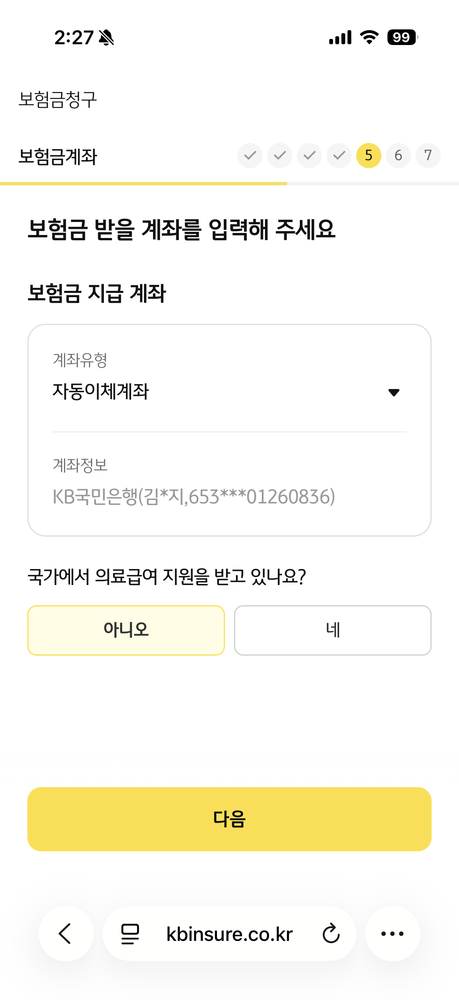
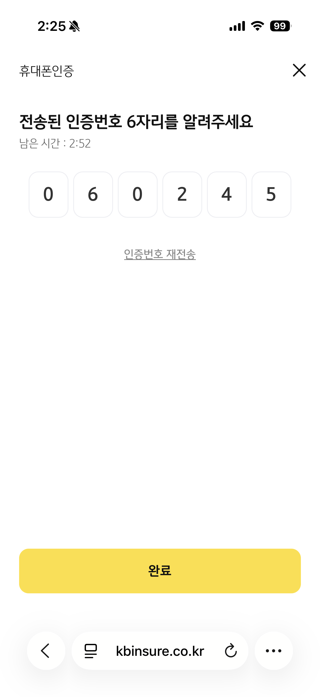
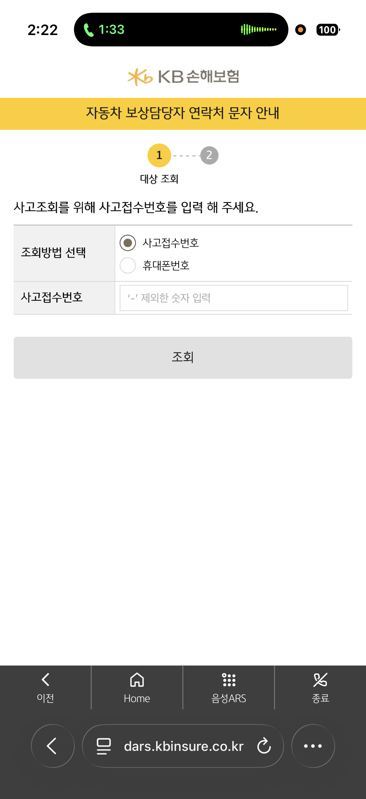
관찰 첫 화면에서 주요 진입점을 짧은 레이블과 큰 터치 영역으로 구분합니다.
벤치마킹 포인트 홈·업무 선택·상담 연결의 화면 역할을 분명히 해 다음 행동을 예측하게 합니다.
키움 적용안 계좌·주문·인증·상담 등 상위 업무를 큰 버튼으로 제시하고 통화 중에도 같은 탐색 구조를 유지합니다.
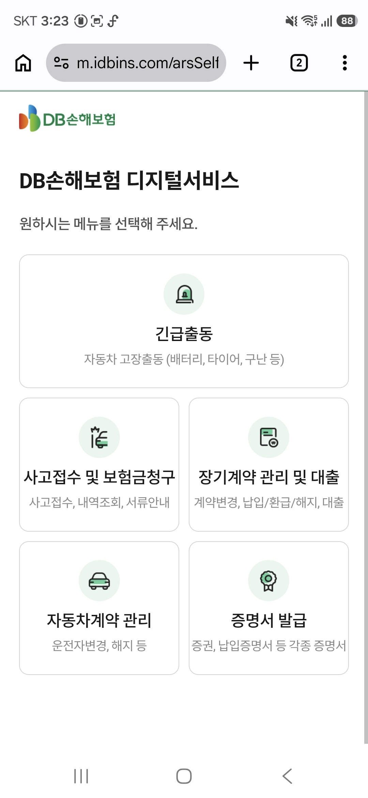
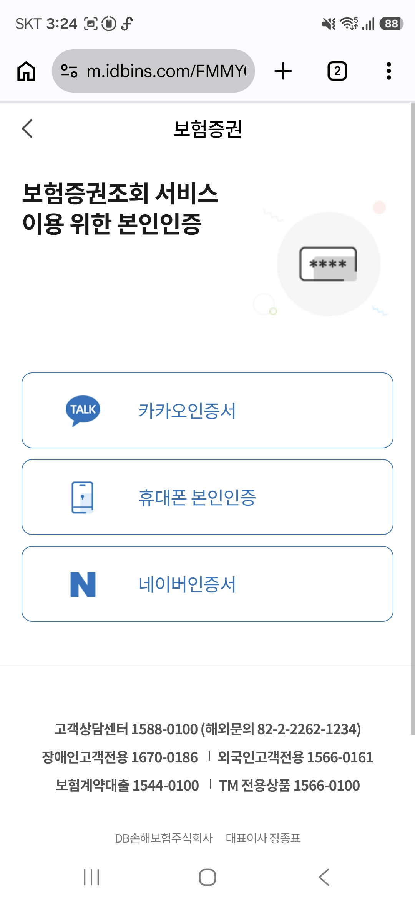
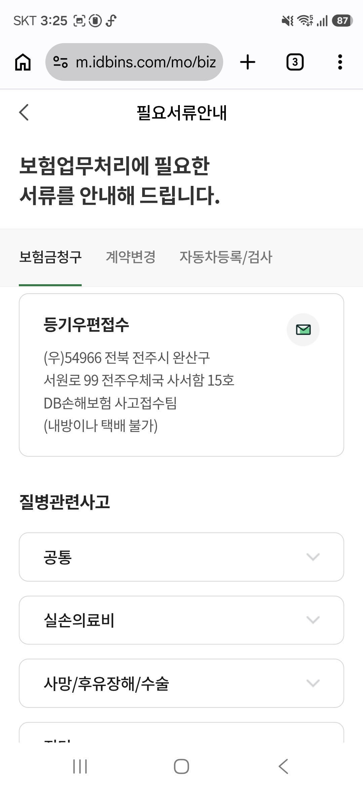
관찰 화면 상단의 채널·상태 표기와 목록형 선택지가 함께 배치됩니다.
벤치마킹 포인트 현재 위치와 선택 가능한 다음 단계를 동시에 보여 주어 뒤로 가기 부담을 줄입니다.
키움 적용안 디지털 ARS 상단에 현재 단계와 상담 전환 상태를 고정하고, 하단에는 계좌·거래 관련 선택지를 단계별로 제시합니다.
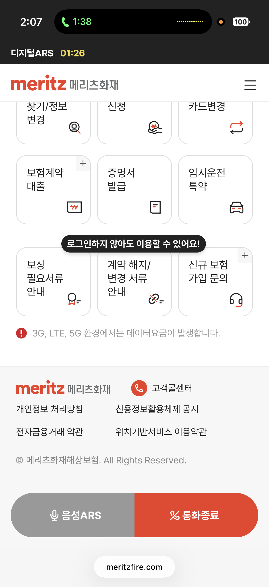
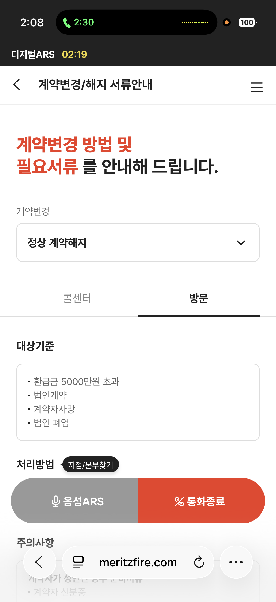
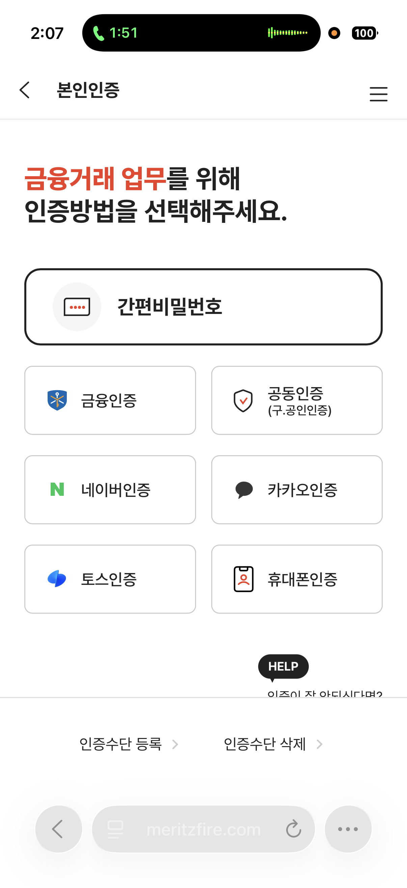
관찰 우선 업무와 보조 안내를 시각적 위계로 나누고 짧은 안내 문구를 반복합니다.
벤치마킹 포인트 첫 선택을 좁혀 주되, 도움이 필요한 사용자를 위한 보조 경로를 남깁니다.
키움 적용안 통화 맥락에서 자주 쓰는 증권 업무를 우선 배치하고, 메뉴 검색·FAQ·상담 전환을 보조 경로로 연결합니다.
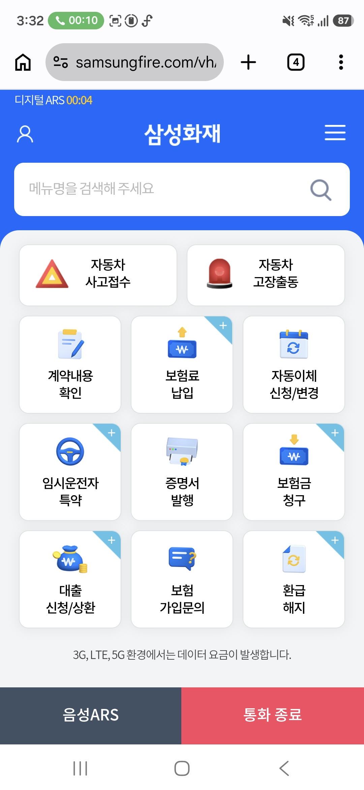
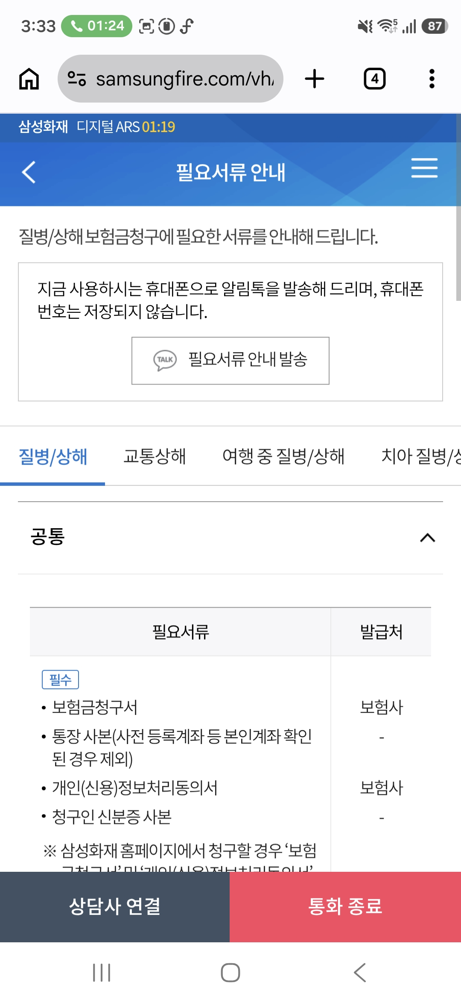
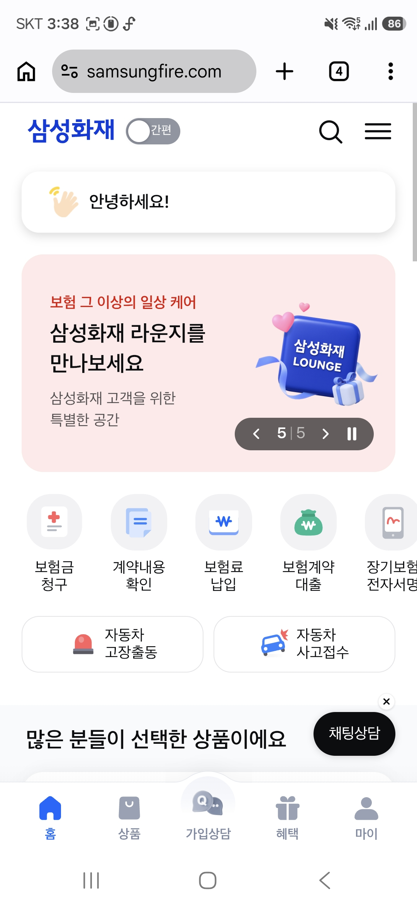
관찰 아이콘·레이블·여백을 일관되게 써서 메뉴 그룹의 경계를 빠르게 인지하게 합니다.
벤치마킹 포인트 통화 중에도 스캔하기 쉬운 정보 밀도와 반복 가능한 조작 패턴을 만듭니다.
키움 적용안 주문·잔고·인증·상담의 메뉴 카드에 동일한 아이콘, 한 줄 설명, 충분한 터치 영역을 적용합니다.
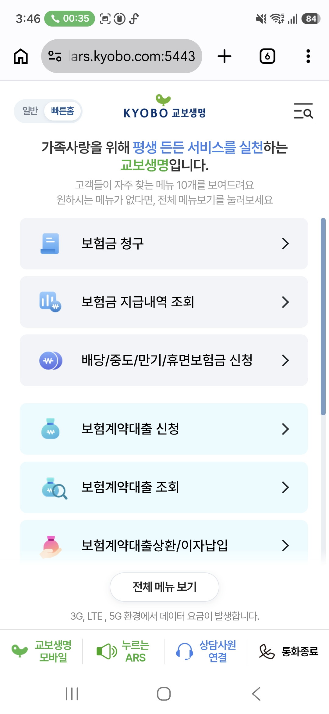
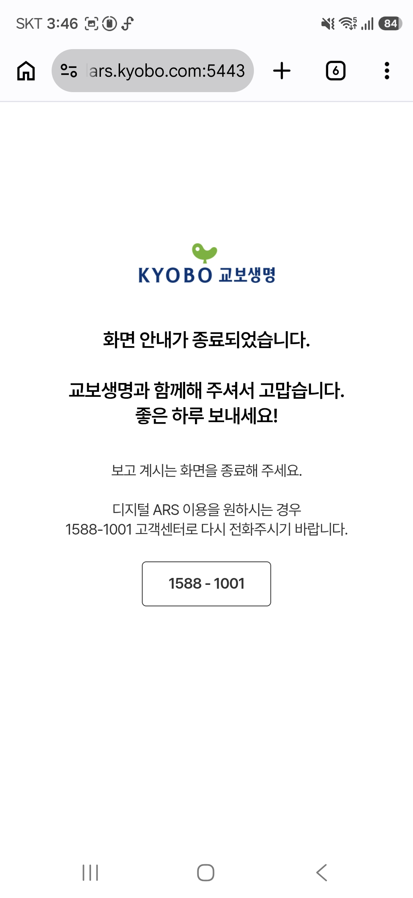
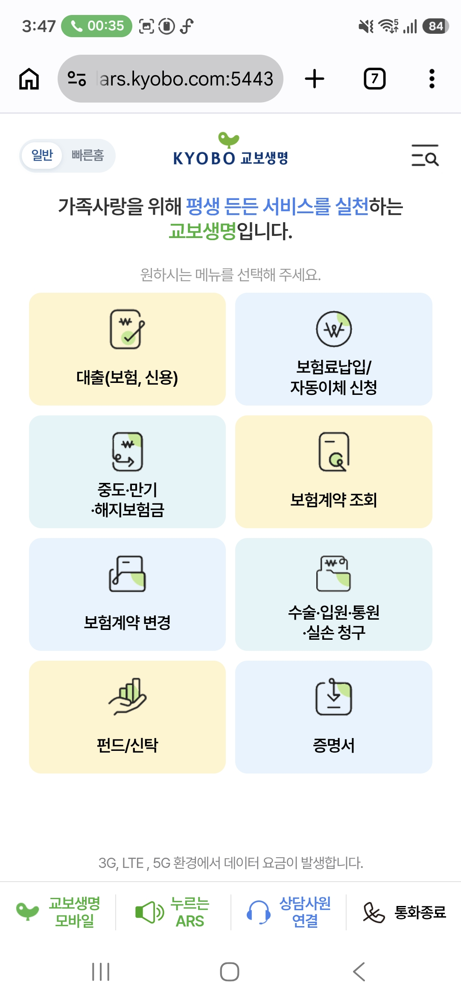
관찰 인사·안내·선택지가 한 화면의 흐름으로 이어져 사용자의 현재 맥락을 설명합니다.
벤치마킹 포인트 정보 제공과 행동 유도를 한 화면에 과밀하지 않게 배치합니다.
키움 적용안 로그인 여부와 통화 단계에 맞춰 한 줄 상태 안내를 제공하고, 바로 실행할 수 있는 증권 업무를 아래에 배치합니다.
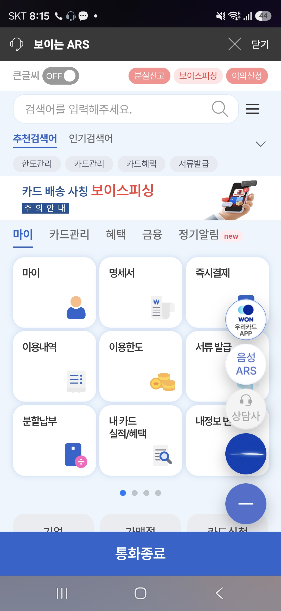
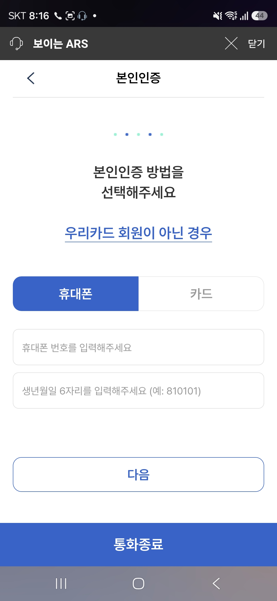
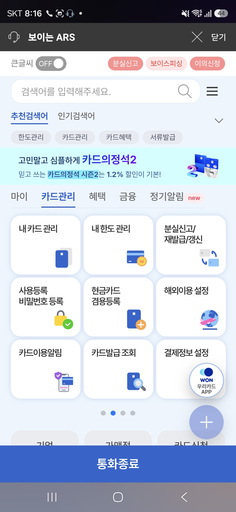
관찰 통화 상태를 보이는 화면 안에서 큰 번호·짧은 업무명으로 선택을 유도합니다.
벤치마킹 포인트 음성 안내와 화면 조작이 같은 순서로 읽히도록 만들어 이중 채널의 혼선을 낮춥니다.
키움 적용안 ARS 음성 번호와 화면의 메뉴 순서를 일치시키고, 누른 메뉴와 다음 단계가 보이도록 피드백을 제공합니다.
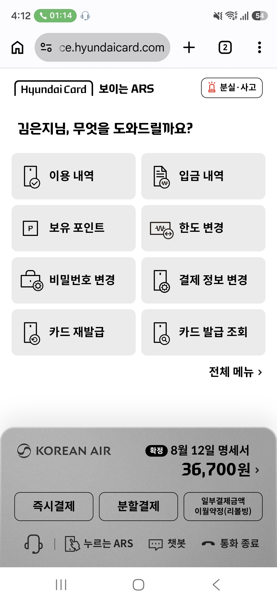
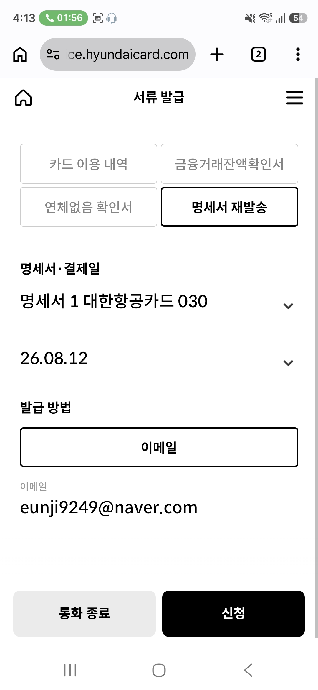
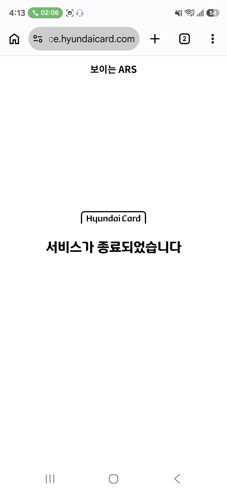
관찰 단순한 카드형 선택과 넉넉한 여백으로 현재 화면의 핵심 행동을 강조합니다.
벤치마킹 포인트 선택지 수를 통제하고 보조 정보의 대비를 낮춰 통화 중 판단 부담을 줄입니다.
키움 적용안 화면별 핵심 행동을 하나로 제한하고, 주문·인증·상담처럼 위험도 높은 업무에는 다음 단계와 유의사항을 간결하게 제시합니다.